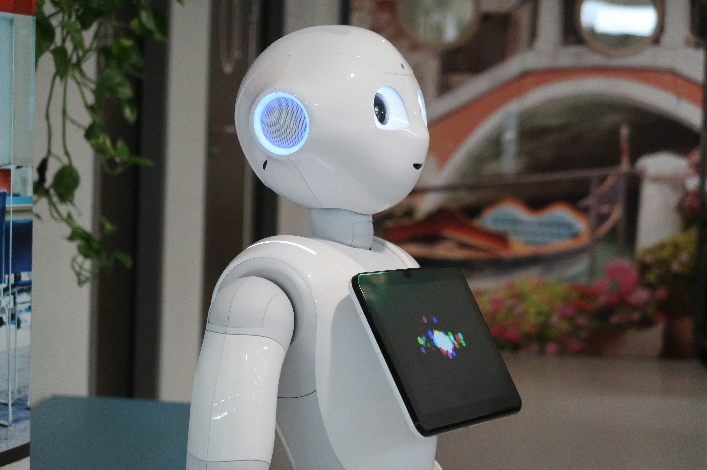
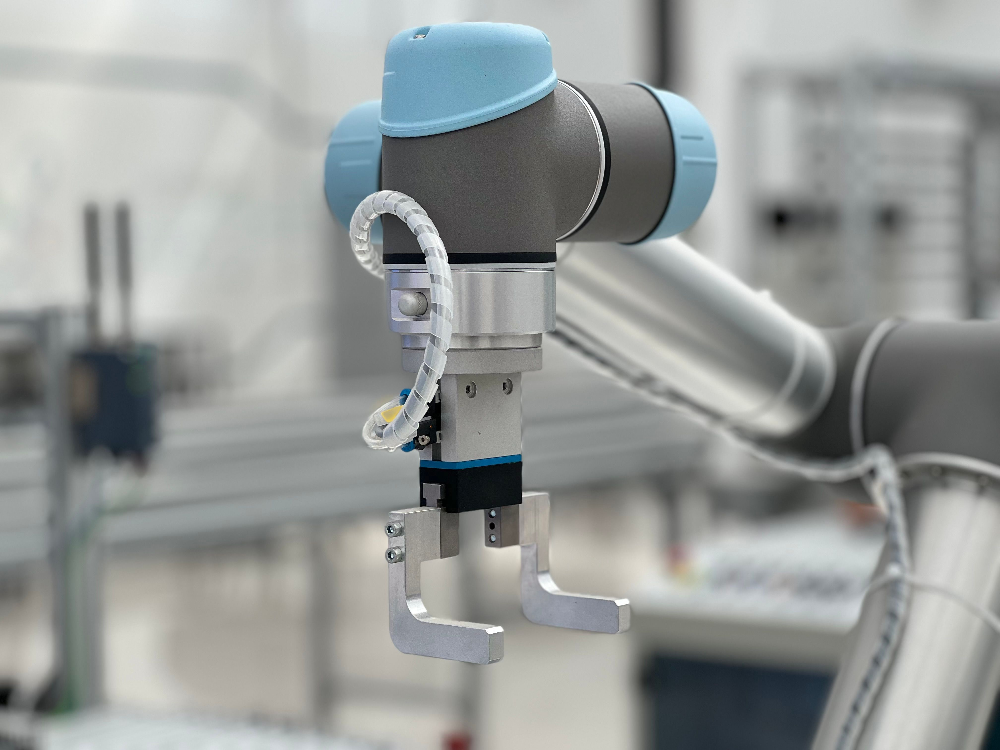

[Persona usando las redes sociales]
Internet y redes sociales
Conectan a gran parte de la humanidad en tiempo real.
El siglo XXI es nuestro periodo actual y se caracteriza por rápidos cambios en tecnología, comunicación, economía, política y ciencia.
Conectan a gran parte de la humanidad en tiempo real.
Un computador, una cámara y un banco en el bolsillo.
Guardar y procesar datos en servidores remotos en lugar de en tu equipo.

[Robot que trabaja con IA]Sistemas que aprenden de datos para reconocer, predecir y crear.
Usar la biología para crear medicinas, alimentos y materiales.
Solar, eólica e hidráulica para reducir las emisiones.

[Brazo robótico trabajando en una fábrica]Máquinas que hacen tareas repetitivas o peligrosas.
Empresas como SpaceX y Blue Origin lanzan cohetes y satélites.
Un aspecto clave es la convergencia: cuando varias tecnologías se combinan, el resultado es mayor que la suma de las partes. Por ejemplo, la inteligencia artificial junto con la robótica y la medicina permite asistir cirugías y analizar imágenes médicas.